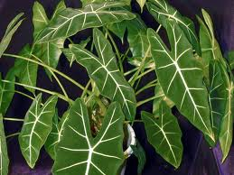

Alocasia

Alocasia (Alocasia)
Toxicité de contact.
Partie toxique pour les chats en général et le Korat en particulier :
Feuilles.
Symptômes du processus pathologique :
Irritant sur la peau et les muqueuses.
Origine de la toxicité (principe actif) :
Acide oxalique.